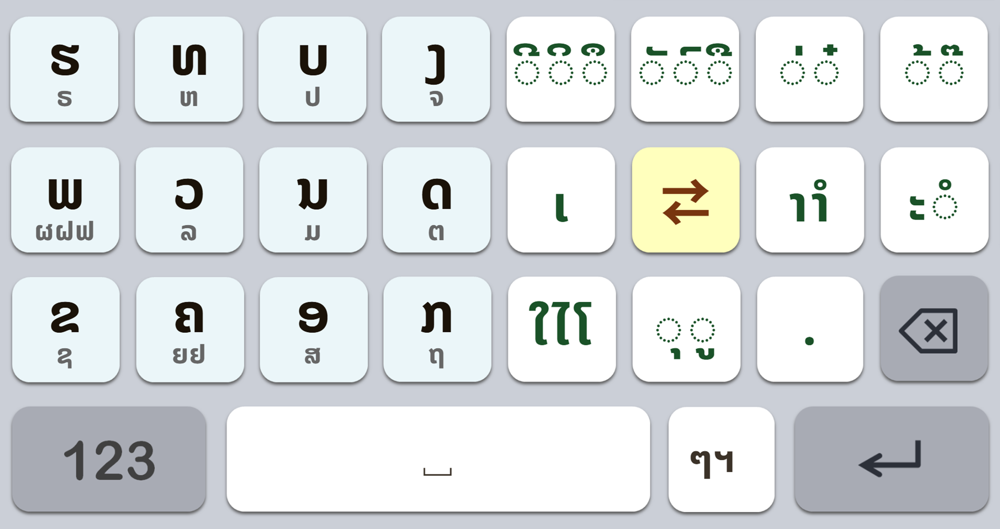
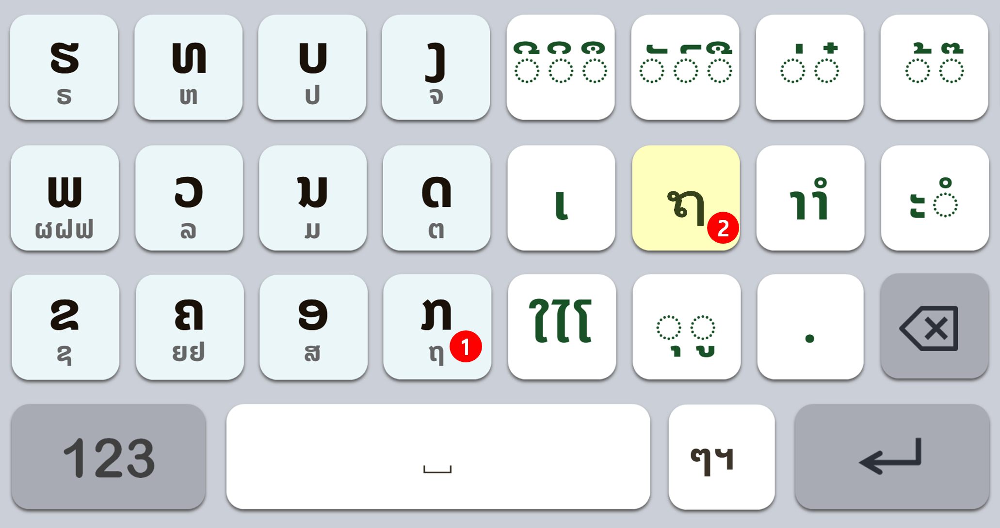
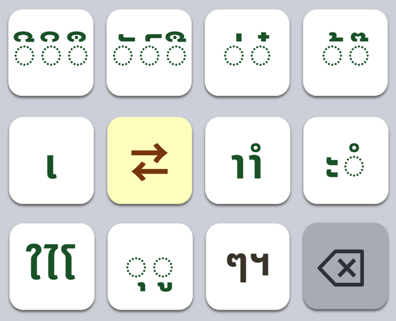
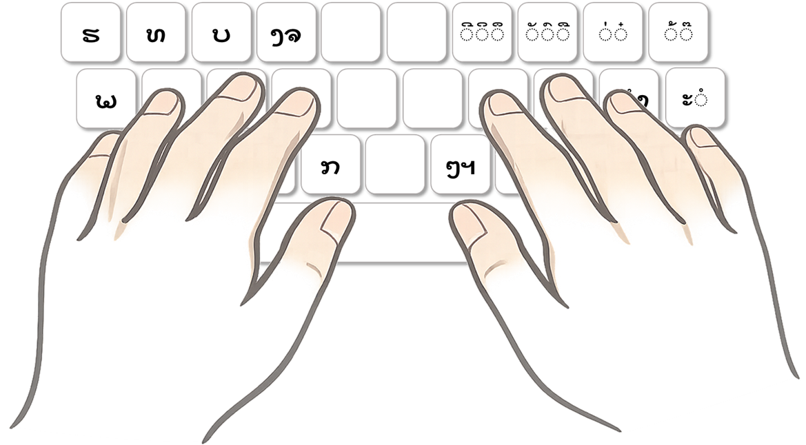

ປະກາດອິດສະລະພາບ
ແຫ່ງຄີບອດລາວ



ຮາທາບັງ (Hatabang) ມີຕົວເລືອກສະແດງຜັງແປ້ນພິມຂະໜາດນ້ອຍເທິງໜ້າຈໍ. ພຽງແຕ່ຕິດຕັ້ງໂປຣແກຣມກໍສາມາດເລີ່ມໃຊ້ງານເທິງຄີບອດເດີມໄດ້ທັນທີ. ເນື່ອງຈາກມີປຸ່ມທີ່ຕ້ອງຈື່ໜ້ອຍຫຼາຍ, ຫາກຝຶກພິມໂດຍເບິ່ງຜັງພຽງບໍ່ກີ່ວັນ, ທ່ານຈະສາມາດພິມສຳຜັດໄດ້ໂດຍບໍ່ຕ້ອງເບິ່ງແປ້ນ.
